Alors, vous avez choisi de passer à Linux ? Très bon choix, ma foi ! Cependant, il se peut que vous ayez besoin d'utiliser une application Windows sur votre nouveau système d'exploitation. Il existe un logiciel appelé Wine qui fait ça très bien. Mais malheureusement, il arrive que certaines applications ne marchent pas, ou mal. Comment faire dans ce cas, pour utiliser votre application, sans pour autant quitter votre environnement ? La réponse, vous l'avez devant les yeux : c'est la virtualisation !
Avant de se lancer corps et âme dans ce tutoriel, voyons déjà plus en détail ce que c'est exactement, la virtualisation. On ne va pas commencer à utiliser quelque chose alors qu'on ne sait même pas en quoi ça consiste, hm :p ?
Un problème : exécuter deux OS en même temps
Un système d'exploitation, vous savez sans doute déjà ce que c'est. C'est lui qui contrôle le matériel de votre ordinateur, et vous permet d'utiliser tout un tas de programmes en même temps. Puisque vous lisez ce tutoriel, je suppose que vous connaissez Linux et Windows, deux des plus utilisés. Sur votre ordinateur, vous fonctionnez peut-être en dual boot, c'est à dire que vous pouvez au démarrage choisir de lancer le système d'exploitation de votre choix. Hop, le menu de GRUB s'affiche, et vous pouvez choisir de démarrer Windows ou Linux, en fonction de vos envies et de vos besoins.
Mais une fois le système d'exploitation choisi et démarré, la seule façon d'en lancer un autre, c'est de redémarrer l'ordinateur. Il semble difficile donc de lancer Linux, puis de lancer Windows juste à côté en cas de besoin. À l'heure actuelle, il existe des projets permettant de le faire, mais ce n'est pas à la portée de tout le monde et pas encore parfaitement au point. Cependant, le futur nous réserve bien des surprises !
Une solution : la virtualisation
En attendant que cette technologie se soit développée, il reste une solution simple : la virtualisation ! Grâce à cette technologie, il est possible d'exécuter un système d'exploitation à partir d'un autre. Il ne s'agit donc pas vraiment d'avoir deux OS côte à côte : en fait, l'OS "virtualisé" est démarré comme une application sur l'OS réel, comme n'importe quelle autre application. Avec ça, vous allez pouvoir démarrer votre Windows à partir de Linux, et y exécuter les applications dont vous avez besoin. Les logiciels de virtualisation créent en fait un autre ordinateur à l'intérieur du premier, mais un ordinateur "virtuel", avec sa propre configuration, son propre disque dur, et tout ça. En fait, il s'agit d'une émulation. Vous avez sans doute déjà joué à la Super Nintendo ou à une autre console sur votre ordinateur : l'émulation, c'est ça. La virtualisation, c'est à peu près la même idée, sauf qu'au lieu de mettre une console dans votre ordinateur, on va mettre un autre ordinateur, vous suivez :D ? Bien sûr, la technique n'est pas la même, mais cela permet de bien comprendre ce que l'on va faire : "émuler" un autre ordinateur sur lequel Windows sera installé, à partir de l'ordinateur sous Linux !
Mais alors mais alors, ça veut dire que je vais pouvoir jouer à mes jeux Windows sous Linux !
Ah, si le monde pouvait être aussi sympathique :p . Mais comme je viens de le dire, l'ordinateur virtualisé aura sa propre configuration, qui n'aura rien à voir avec la vôtre. Cela veut dire que, même si vous possédez la dernière Nvidiati XG8500, l'ordinateur virtualisé n'aura qu'une simple petite carte graphique tout juste bonne à afficher les économiseurs d'écrans en 3D de Windows. À l'heure actuelle, on ne peut donc pas exécuter de gros jeux en 3D sur une machine virtuelle, cela prendrait trop de ressources.
En attendant, si vous avez juste besoin d'une application simple ou d'un petit jeu en 2D, alors il n'y aura pas de problèmes. Si vous êtes convaincus, allons-y !
VirtualBox ou VMware Server ?
Vous avez décidé de vous lancer ? Alors, commençons par la première étape : choisir un logiciel de virtualisation. De notre côté, nous allons voir VirtualBox et VMware Server. Sachez qu'il en existe d'autres, notamment Qemu, assez connu dans le monde du libre. Bien qu'il soit performant, sa mise en place est peut-être un peu compliquée pour quelqu'un qui débute. Une fois que vous aurez fait vos armes sur un des deux logiciels, n'hésitez cependant pas à tenter le coup avec d'autres, vous ferez peut-être des découvertes intéressantes !
VirtualBox
VirtualBox a réussi à se faire une place dans le monde des logiciels de virtualisation. Ses performances sont plus qu'honorables par rapport aux ténors de cette catégorie, et il propose en outre quelques fonctions intéressantes. De plus, il est en français, très simple à installer et à utiliser, et pour ne rien gâcher, il est gratuit et libre (enfin, à moitié, mais c'est toujours mieux que complètement propriétaire) ! L'une des fonctions les plus intéressantes de VirtualBox, apparue dans la version 1.5, est appelée la virtualisation seamless. Comme son nom l'indique aux anglophones, ce principe permet en fait d'intégrer les applications Windows à votre bureau Linux. Vous pouvez donc par exemple avoir votre Firefox sous Linux, et dans la fenêtre juste à côté, Internet Explorer sous Windows. Une fonction très pratique, et assez impressionnante ! Côté inconvénients, VirtualBox ne permet pas de facilement utiliser un disque dur déjà installé dans l'ordinateur. Si vous voulez utiliser votre Windows déjà installé à côté de votre Linux, cela n'est pas facile à mettre en place. Il faudra donc créer une nouvelle installation de Windows, virtuelle celle-là, ou aller voir du côté de VMware Server.
VMware Server
VMware Server est un outil gratuit créé par la société VMware, bien connue dans le monde de la virtualisation, pour faire de la pub à ses solutions payantes. Mais ne vous inquiétez pas, cette version gratuite n'est absolument pas bridée et possède tout un tas de fonctions intéressantes. Ce logiciel permet en outre de créer très facilement une machine virtuelle basée sur un disque dur déjà existant. Si vous voulez utiliser un Windows déjà installé, alors il vaut mieux utiliser VMware Server que VirtualBox, car l'opération est plus simple. Cependant, VMware Server est en anglais, peut-être un peu plus compliqué, et ne possède pas (encore ?) de virtualisation seamless.
Bref, à vous de voir lequel vous désirez essayer. J'ai une petite préférence pour VirtualBox, mais après, c'est vous qui voyez, hein :p . Tout dépend de vos besoins et de vos goûts. Nous allons voir les deux, alors si vous ne savez pas lequel essayer, vous pouvez tenter le coup avec chacun !
Commençons donc par VirtualBox, parce que c'est mon petit préféré, et parce qu'il est le plus simple à installer et à utiliser.
Installation
Quelques prérequis...
Avant de commencer, nous allons devoir installer quelques paquets dont nous aurons besoin par la suite. Commencez par ouvrir une console. Si vous avez suivi le tutoriel Linux, vous savez déjà comment faire. Sinon, il vous suffit de vous rendre dans le menu Applications > Accessoires > Terminal sous Ubuntu, ou dans le menu K (l'îcone avec un K sur votre barre de menu) > Système > Konsole.
Afin d'être sûr d'avoir une liste des paquets à jour, tapez cette commande :
sudo apt-get update
La console vous demandera votre mot de passe, il vous suffit de le taper puis d'appuyer sur Entrée. La liste des paquets se met alors à jour, une opération qui ne devrait pas prendre plus de quelques secondes. Une fois ceci fait, exécutez la commande suivante pour installer des paquets nécessaires à l'installation de VirtualBox :
Cette opération prendra un peu plus de temps, en fonction de votre connexion.
Ensuite, il reste à installer VirtualBox. Sous Gutsy Gibbon, le paquet est déjà disponible dans les dépôts de la distribution, mais je vous conseille plutôt d'ajouter le dépôt officiel de VirtualBox. Cela vous permettra en général d'avoir la dernière version du logiciel plus rapidement.
Nous allons donc ajouter un nouveau dépôt à votre liste pour pouvoir l'installer. Ne vous inquiétez pas, c'est très simple :p Sous Ubuntu, exécutez la commande suivante :
gksu gedit /etc/apt/sources.list
Sous Kubuntu :
kdesu kate /etc/apt/sources.list
Une nouvelle fenêtre apparaîtra, vous demandant votre mot de passe. Vous vous retrouverez ensuite devant le fichier sources.list. Celui-ci contient la liste des dépôts où Ubuntu peut aller glaner les paquets. Nous allons donc y ajouter celui où l'on peut trouver Virtualbox. Rendez-vous à la fin du fichier, puis ajoutez-y la ligne suivante, en fonction de la version d'Ubuntu installée.
Sous Feisty :
deb http://download.virtualbox.org/virtualbox/debian feisty non-free
Sous Gutsy :
deb http://download.virtualbox.org/virtualbox/debian gutsy non-free
Si vous avez une autre version d'Ubuntu, remplacer feisty ou gutsy par le nom que vous avez obtenu grâce à la commande un peu plus haut.
Une fois la modification effectuée, sauvegardez le fichier. Tapez ensuite la commande suivante. Celle-ci permet d'authentifier le dépôt, pour s'assurer que vous n'allez pas télécharger n'importe quoi venant de n'importe où.
Enfin, mettez à jour la liste des paquets comme nous avons vous plus haut, avec la commande sudo apt-get update.
Et maintenant, on installe pour de bon !
Maintenant que tout est en place, nous allons pouvoir installer VirtualBox. Pour cela, tapez la commande suivante :
sudo apt-get install virtualbox
Si l'application vous demande si vous voulez continuer, tapez évidemment O pour Oui :p . Le paquet se télécharge, ainsi que quelques dépendances nécessaires. Là encore, ça peut prendre un peu de temps. Une fois le téléchargement terminé, vous aurez droit à l'écran suivant :
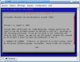Évidemment, comme de bons utilisateurs, vous lisez le contrat de licence jusqu'au bout :-° . Une fois votre lecture achevée, appuyez sur la touche Tabulation puis Entrée pour choisir OK, puis sur la flèche gauche et Entrée pour choisir Oui (sauf si vous n'acceptez pas la licence, mais dans ce cas, vous ne pourrez pas installer le paquet ;) ).
Vous serez ensuite informés de la création du groupe vboxusers, dont on reparlera plus tard. Si l'installation vous pose d'autres questions, lisez ce qu'on vous demande et répondez correctement :p En général, Oui est la bonne réponse. Une fois l'installation terminée, si tout s'est bien passé, vous devriez voir ceci :
Et voilà, VirtualBox est installé ! Mais avant de pouvoir l'utiliser, vous devez vous ajouter dans le groupe vboxusers. Si plus d'un compte existe sur votre ordinateur, il faudra également les ajouter, sans quoi ces autres comptes ne pourront pas démarrer le logiciel. Tapez donc la commande suivante :
sudo adduser votrenom vboxusers
Remplacez votrenom par le nom d'utilisateur sous lequel vous êtes loggé. Si vous ne vous en souvenez pas, regardez juste à gauche du @ dans la console :p Si jamais l'installation n'a pas déjà créé le groupe, vous pouvez le faire simplement en tapant la commande suivante :
sudo groupadd vboxusers
Zou, c'est terminé. Avant d'exécuter VirtualBox, vous allez devoir redémarrer votre ordinateur pour que les changements soient pris en compte. Allez-y, je vous attends :D .
Configuration
Maintenant que VirtualBox est installé, démarrons-le ! Sous Kubuntu, il se trouve dans le menu Système. Sous Ubuntu, il se trouve dans Applications > Outils Système. Cliquez sur l'entrée appelée innotek VirtualBox, et l'application se lance, hop.
Au premier démarrage, vous devrez peut-être rentrer quelques informations personnelles avant de pouvoir commencer. Libre à vous de remplir les champs ou pas, si vous pensez que ces informations risquent d'être mal utilisées, n'entrez pas vos vraies données.
Bien, il est l'heure de créer notre machine virtuelle. Pour cela, cliquez simplement sur l'îcone Nouveau. Un assistant s'affichera, pour vous guider à travers les étapes de la création de votre machine. Cliquez sur Suivant, puis donnez un nom à votre machine virtuelle, par exemple le système d'exploitation installé. En dessous, choisissez l'OS que vous allez installer.
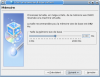Cliquez sur Suivant. Ici, vous allez devoir choisir la quantité de RAM à allouer à votre machine virtuelle. Sachez que plus vous lui en allouez, plus elle sera rapide, vous risquez donc moins de voir des ralentissements pendant que vous travaillez. Veillez à ne pas choisir une valeur trop faible, sans quoi votre système aura du mal à fonctionner... Mais ne choisissez pas non plus une valeur trop grande, sans quoi c'est Linux qui risque de ramer ! Il est en général conseillé de choisir la moitié de la RAM à votre disposition. J'en possède 2 Go, j'en alloue donc 1, rien de plus simple !
Une pression sur le bouton Suivant, et vous vous retrouvez à l'endroit où configurer le disque dur. Attention, il ne s'agit pas là d'un vrai disque dur. C'est en fait un fichier comme un autre, qui sera considéré par l'ordinateur virtualisé comme son disque dur. L'avantage, c'est qu'il n'a aucun lien avec votre vrai ordinateur. Cela veut dire que si vous faites une bêtise avec votre Windows, cela n'aura aucune conséquence sur votre matériel réel. C'est l'un des avantages de la virtualisation ! Enfin, c'est pas une raison pour faire n'importe quoi, hein ;) .
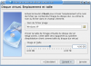Bref, cliquez sur Nouveau pour démarrer l'assistant de création de disque dur, puis sur Suivant dans cette nouvelle fenêtre. Là, vous avez le choix entre une image à taille fixe et une image dynamique. Une image dynamique aura au départ une très petite taille, et augmentera au fur et à mesure de votre utilisation du disque dur, jusqu'à la limite fixée. Une image à taille fixe aura dès le départ la taille choisie. En général, il est conseillé d'utiliser une image dynamique, car cela évite de se retrouver avec une partie de son disque dur occupée d'un seul coup. Cependant, puisque la taille du fichier doit être modifiée en cours de route, cela peut rendre l'accès au disque dur virtuel un poil plus lent. À vous de voir si vous retrouver avec un fichier de 10 Go sur votre disque dur ne vous fait pas peur ! Cliquez sur Suivant, puis choisissez une taille à allouer au disque dur. Celui-ci ne pourra pas la dépasser, donc ne vous inquiétez pas, vous ne pouvez pas utiliser tout votre disque dur d'un coup :p Vous pouvez choisir une taille comprise entre 4 MB (euh, pour installer DOS peut-être), et...2 TB ! Enfin, pour créer une image de 2 TB, il vous faudrait déjà un disque dur aussi énorme que ça, et ça ne court pas les rues :D . Bref, choisissez une taille en fonction de la capacité de votre disque dur actuel, du système d'exploitation choisi (l'installation de Vista prend plus de place que celle de XP, qui en prend plus que celle de Windows 98 par exemple), et enfin de votre "espace personnel". Dans mon cas, avec Windows XP, je choisi une taille de quelques Giga, afin d'avoir de la place pour mes applications. Si vous avez choisi une image dynamique, ce choix n'a cependant pas une importance cruciale. Cependant, choisissez tout de même la taille limite avec précaution : si vous avez besoin de plus d'espace par la suite, vous ne pourrez pas en rajouter en modifiant le disque dur créé, il vous faudra en ajouter un second à la machine virtuelle.
Une fois vos choix faits, cliquez sur Suivant puis sur Terminer. Le disque dur créé est automatique attribué à la machine, vous n'avez plus qu'à cliquer à nouveau sur Suivant pour continuer. Faites une dernière fois Terminer, après vous êtes assuré que tout est correct, et voilà, la machine est créée ! Avant de la lancer, choisissez-la dans la liste et cliquez sur Préférences, car il faut encore régler quelques options. Je suppose que vous allez installer votre OS à partir d'un CD ou d'un DVD. À gauche, cliquez sur CD/DVD-Rom puis cochez Installer un lecteur. Ainsi, la machine virtuelle aura accès à un lecteur de CD, bien utile pour l'installation tout de même ! Dans la liste de droite, vous pouvez choisir le lecteur utilisé. Normalement, le premier est le bon, mais si la machine semble ne pas détecter le CD inséré, choisissez-en un autre. Notez que vous pouvez également utiliser une image ISO, il suffit d'indiquer le chemin à VirtualBox. Rendez-vous ensuite dans Audio, et cochez la case Activer l'audio, puis choisissez dans la liste le pilote audio ALSA. Bien sûr, c'est uniquement si vous voulez avoir du son :p . Si vous comptez utiliser votre Windows avec des applications où le son n'est pas indispensable, ne l'activez pas, cela améliorera les performances de la machine virtuelle. Dans Réseau, vous pouvez choisir comment la machine virtuelle va accéder au réseau local. Je vous conseille de choisir NAT, ce qui connectera la machine virtuelle à votre réseau comme s'il s'agissait d'un autre ordinateur. Sachez que "Réseau interne" crée un réseau entre la machine virtuelle et l'ordinateur qui l'exécute, isolé du reste. Utile si vous ne possédez pas de réseau chez vous. Si vous n'avez pas besoin d'avoir accès à Internet ou au réseau, vous pouvez tout simplement décocher la case en haut de la fenêtre pour désactiver l'adaptateur et gagner encore un peu en performances.
Bien, tout est bon, nous allons pouvoir lancer la machine. Insérez le CD d'installation de votre Windows, cliquez sur Lancer, et c'est parti !
Installation de l'OS virtualisé
Installer Windows
Avant de démarrer, VirtualBox vous signalera que, quand vous cliquez dans la fenêtre de la machine virtuelle, la souris y est "coincée". Vous ne pourrez donc pas la sortir de la fenêtre si vous voulez l'utiliser ailleurs. Pour la débloquer, vous devrez utiliser la touche Ctrl droite. Si jamais vous l'oubliez, elle reste en permanence affichée en bas à droite ;) .
Voilà, votre ordinateur démarre comme un vrai. Il suffit ensuite d'installer votre système d'exploitation comme vous le feriez sur un vrai ordinateur. Il n'y a strictement rien de compliqué à ça, il suffit de suivre les instructions. Ici, mon installation de Windows XP se déroule correctement :
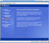Pendant que l'installation se fait, vous pouvez continuer à utiliser votre ordinateur normalement, il sera juste sans doute un peu plus lent. Ne lui demandez tout de même pas de tâches trop complexes, il travaille déjà beaucoup !
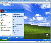Pas mal hein ? On dirait un vrai ! Allez dans Machine > Plein Écran (utiliser Ctrl Droite+F pour en sortir), et hop, on croirait presque être devant Windows.
Euh, pas avec cette toute petite résolution ! Mon Windows prend un quart de mon écran seulement o_O !
C'est normal c'est normal :p . Il nous reste encore une petite étape à faire pour que tout soit parfait.
Installer les additions client
Les additions client sont une fonction de VirtualBox qui permettent d'améliorer le comportement de votre machine virtuelle. Par exemple, vous n'aurez plus besoin d'utiliser Ctrl droite pour sortir la souris de la fenêtre, la résolution utilisée sera plus grande, et surtout, vous pourrez utiliser le mode Seamless ! Bref, bien que ça ne soit pas indispensable, l'installation des ajouts clients est conseillé.
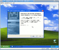Pour installer tout ça, rien de plus simple : rendez vous dans le menu Périphériques, puis cliquez sur Désinstaller un CD. Retournez dans ce menu et cliquez sur Installer les additions clients. Windows va détecter l'insertion d'un nouveau CD et lancer le programme d'installation (si ce n'est pas le cas, rendez-vous dans le poste de travail, puis exécutez le fichier VboxGuestAdditions présent sur le CD.) Suivez la procédure d'installation, ça se fait tout seul et ça va très vite. Une fois l'installation terminée, redémarrez l'ordinateur (le virtualisé, pas le vrai :p ).
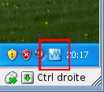
Une fois la machine virtuelle relancée, vous vous rendrez facilement compte si l'installation a réussie. Non seulement le logo de VirtualBox apparaît dans le system tray (en bas à droite de l'écran), mais vous n'avez plus besoin de cliquer dans la fenêtre de la machine virtuelle pour la contrôler, ni d'utiliser Ctrl Droite pour en sortir ! Vous pouvez en outre redimensionner la fenêtre de la machine virtuelle : la résolution sera automatiquement adaptée. Essayez de retourner en mode Plein écran (rappel : Ctrl Droite+F pour en sortir). Ce coup-ci, ce vrai faux Windows pourrait tromper presque n'importe qui !
Voilà, l'installation est terminée. Vous pouvez maintenant vous servir de votre Windows comme sur un vrai ordinateur, en y installant les applications dont vous avez besoin. Mais avant de passer à la suite, voyons...
Quelques fonctions sympathiques
Le mode seamless
Je vous en parlais tout à l'heure : Virtualbox possède une fonction bien pratique : la virtualisation seamless. Si vous n'avez pas bien compris comment ça fonctionne, le mieux, c'est encore d'essayer ! Pour cela, il faut d'abord avoir installé les additions client. Quand c'est fait, rendez-vous dans le menu Machine puis cliquez sur Mode affichage intégré dans le bureau. Hop, votre barre des tâches se place en bas de votre écran, et toutes les applications Windows démarrées s'intègrent à votre bureau de manière complètement transparente ! 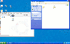 Pour faire réapparaître la barre des tâches et les applications Windows si vous les cachez, cliquez sur votre machine virtuelle dans la barre des tâches de votre gestionnaire de fenêtre. Pour l'instant, vous êtes obligé de passer par la barre des tâches Windows pour naviguer dans les applications Windows démarrées. Mais qui sait, un jour peut-être celles-ci viendront accompagner les applications Linux dans la barre des tâches de votre gestionnaire de fenêtres :p . Bref, si vous désirez quitter le mode Seamless, utilisez la combinaison Ctrl Droite + L.
Les instantanés
Comme leur nom l'indique, les instantanés vous permettent de prendre une "photo" de votre système à un instant t, puis de le faire revenir dans cet état à n'importe quel moment. Utile si vous faites une bêtise et que vous voulez retourner en arrière ! Quand vous voulez en faire, mettez d'abord la machine en pause en cliquant sur Machine puis sur Pause. Ensuite, rendez-vous à nouveau dans le menu Machine puis cliquez sur Saisie d'un instantané. Vous pouvez lui donner un nom et une description. La sauvegarde de l'instantané prendra ensuite quelques secondes. Pour relancer la machine, il suffit de se rendre dans le menu Machine puis de cliquer sur Continuer.
Si vous voulez ensuite restaurer l'instantané, cliquez sur Machine puis Fermer, cochez la case Retour sur l'instantané actuel, puis redémarrez la machine. Vous pouvez également choisir l'instantané de votre choix dans l'onglet Instantané avant de démarrer la machine. Cliquez ensuite sur le second bouton (Retour à l'instantané actuel), et enfin démarrez la machine.
Mise à jour et désinstallation
Grâce au système des paquets, la mise à jour et la désinstallation de VirtualBox est on ne peut plus simple !
Mise à jour
Pour mettre à jour VirtualBox, il suffit d'exécuter les mêmes commandes que lorsque vous mettez à jour les autres applications déjà installées sur votre ordinateur. Si vous êtes prévenus lors de l'apparition de nouvelles mises à jour, vous n'aurez rien à faire : Ubuntu s'en chargera tout seul comme un grand :p . Sinon, vous pouvez toujours exécuter dans la console ces deux commandes. Si la nouvelle version est disponible dans le dépôt officiel de VirtualBox, elle sera téléchargée.
sudo apt-get update
sudo apt-get upgrade
Désinstallation
De la même façon, une simple commande suffit à désinstaller VirtualBox :
sudo apt-get remove virtualbox
Cette commande désinstalle VirtualBox, mais ne touche pas au dossier contenant vos machines virtuelles. Vous devrez le supprimer vous-même. Il se trouve normalement dans votre dossier personnel, sous le nom .VirtualBox (le point signifie que le dossier est caché, vous devrez peut-être activer l'affichage des dossiers cachés de votre navigateur de fichier pour le voir).
Et voilà, vous savez déjà beaucoup de choses sur VirtualBox ! Sachez que le logiciel offre encore quelques fonctions, mais nous avons vu les plus importantes et les plus utiles. Si la lecture ne vous fait pas peur, n'hésitez pas à consulter le manuel de VirtualBox, accessible à travers le menu Aide de l'application. Vous y apprendrez d'autres choses intéressantes !
VMware Server possède plus ou moins les mêmes fonctions que VirtualBox, mais avec tout de même quelques différences. Si VirtualBox ne vous convient pas ou que vous voulez essayer autre chose, c'est un bon choix. Et si vous souhaitez utiliser le disque dur actuellement installé dans votre ordinateur, c'est aussi la bonne solution, car VMware Server permet de le faire très facilement. Seul problème, il est un petit peu plus difficile à installer que VirtualBox, et est en anglais. Bref, à vous de voir si vous voulez vous lancer !
Installation
Téléchargement
VMware Server n'est pas disponible dans les dépôts de la distribution. Vous allez donc devoir le télécharger et l'installer vous-même, à la main. Une chose qu'on a plus trop l'habitude de faire, mais ne vous inquiétez pas, un script d'installation est présent et fera presque tout le boulot pour vous ! Avant de télécharger et d'installer VMware Server, assurez-vous d'installer certains paquets, grâce à cette commande :
sudo apt-get install xinetd build-essential
Une fois les paquets téléchargés, rendez-vous ici pour télécharger VMware Server. Pour pouvoir télécharger et utiliser le logiciel, vous allez devoir vous inscrire en remplissant cette page. Vous n'êtes pas obligé de donner de vraies informations, la société n'en a absolument pas besoin...Faites juste attention de bien remplir tous les champs. Quand vous avez terminé, validez. Vous obtiendrez alors un numéro de série, que vous feriez mieux de noter quelque part ! Sur la page qui vous donne le numéro de série, cliquez sur Download Now. Acceptez la licence d'utilisation en cliquant sur Yes, en bas de la page. Enfin, sur la nouvelle page qui apparaît, téléchargez le fichier VMware Server for Linux (la version sous forme de .tar.gz). Enregistrez le quelque part et n'oubliez pas où il est, on en aura besoin dans quelques secondes !
Ça serait pas mieux d'avoir le lien de téléchargement directement :p ?
Oui, moi aussi j'aimerai bien vous le donner comme ça ^^ . Malheureusement, VMware Server nécessite absolument d'avoir un numéro de série unique pour fonctionner, et la seule façon de l'avoir, c'est de s'enregistrer ainsi.
Script d'installation
Une fois le fichier téléchargé, ouvrez une console, et rendez vous dans le répertoire où vous venez de télécharger le fichier (si il se trouve dans votre bureau, vous pouvez tout simplement taper cd ~/Desktop ) Exécutez ensuite la commande suivante pour décompresser le fichier.
tar xzf vmware-server-1.0.*.tar.gz
La décompression devrait se passer assez vite. Quand ce sera terminé, vous n'aurez aucun message mais vous pourrez reprendre la main. La décompression vient de créer un dossier, il faut donc s'y rendre :
cd vmware-server-distrib
Lancez ensuite le script d'installation :
sudo ./vmware-install.pl
Le script d'installation va vous poser un paquet de question. Entre crochets, vous verrez la valeur par défaut qui sera choisie si vous ne répondez rien. Cette valeur est en général tout à fait correct, mais vous pouvez la changer si vous savez ce que vous faites. Je ne vais pas détailler toutes les questions que va vous poser le script, car pour la plupart, vous n'aurez qu'à appuyer sur Entrée. Voyons voir les moments où vous devrez faire attention :
You must read and accept the End User License Agreement to continue.
Press enter to display it.
Lorsque vous verrez ceci, appuyez sur Entrée, puis appuyez sur Espace pour arriver jusqu'à la fin de l'accord (vous pouvez également le lire si ça vous dit :p ). Lorsque le script vous demande Do you accept?, tapez yes. Le script va par la suite compiler un paquet de choses, ce qui va prendre un petit moment. Ne vous inquiétez pas, tout devrait se dérouler correctement, même si vous ne comprenez pas forcément ce que la console vous affiche ;) .
Do you want networking for your virtual machines? (yes/no/help) [yes]
Ici, vous pouvez répondre no si vous ne comptez pas utiliser le réseau sur vos machines virtuelles. Soyez sûr de ça, car si vous répondez non et que vous désirez le réactiver par la suite, il faudra exécuter à nouveau le script de configuration.
Your computer has multiple ethernet network interfaces available: eth0, eth1.
Which one do you want to bridge to vmnet0? [eth0]
Si vous possédez plus d'un moyen d'accès au réseau, le script vous posera cette question. Choisissez l'interface avec laquelle vous êtes actuellement connectés au réseau. Malheureusement, ceci est différent pour chaque ordinateur, je ne peux donc pas vous dire quoi choisir. Je vous conseille de taper ifconfig dans une autre console, et de regarder quelle interface possède une adresse IP : choisissez celle-là. Si vous n'êtes vraiment pas sûr (ou que vous utilisez réellement plusieurs interfaces), laissez le choix par défaut, et répondez yes à la question suivante :
Do you wish to configure another bridged network? (yes/no) [no]
Le programme configurera donc les autres interfaces, au lieu d'une.
Après tout ça, le script va se refaire un petit coup de compilation.
In which directory do you want to keep your virtual machine files?
[/var/lib/VMware/Virtual Machines]
Ici, il est préférable de mettre le dossier des machines virtuelles dans votre dossier personnel, pour que vous y ayez accès plus facilement. Pour cela, répondez à la question par /home/votrenom/VMware, par exemple (n'utilisez pas ~ pour indiquer votre dossier personnel, le script n'en voudra pas ^^ ).
Ensuite, il vous demandera le numéro de série que vous avez, j'espère, noté quelque part :p .
Please enter your 20-character serial number.
Type XXXXX-XXXXX-XXXXX-XXXXX or 'Enter' to cancel:
Si vous le tapez à la main, faites attention de bien mettre un tiret tous les cinq caractères.
Voilà, une fois cette étape passée, VMware Server est installé !
Configuration
Il est maintenant temps de lancer notre application fraîchement installée. Sous Ubuntu, vous la trouverez dans le menu Outils Système du menu Applications. Sous KDE, elle se cache dans le menu Système du menu K. Après avoir démarré, le programme affiche une fenêtre vous demandant de vous connecter. Cliquez simplement sur Connect pour vous connecter au serveur local. Cliquez à présent sur le bouton
pour...créer une nouvelle machine virtuelle (Dingue :p ). À partir de là, vous aurez droit à un assistant qui va vous guider à travers la création de la machine virtuelle. 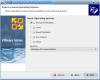Cliquez sur Next, puis sur Custom, histoire d'avoir un peu plus de choix. Choisissez ensuite le système d'exploitation que vous comptez installer. Cliquez sur Next, et assignez, si vous le souhaitez, un autre nom à votre machine virtuelle. Passez à la suite, et choisissez le nombre de processeurs qui seront attribués à la machine. Si vous possédez un processeur dual-core, vous pouvez choisir Two histoire d'augmenter un peu les performances de la machine. Attention, si vous choisissez Two alors que vous n'avez pas un processeur double-c?ur, la machine refusera de se lancer ! L'étape suivante vous permet d'autoriser la machine à être utilisée par les autres comptes sur votre ordinateur. Si vous laissez la case cochée, alors les autres utilisateurs ne pourront pas lancer la machine. Ça n'a pas grande importance si votre Linux ne possède qu'un seul compte ;) .
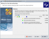Vous allez ensuite devoir choisir la quantité de mémoire attribuée à votre machine virtuelle. VMware Server est un peu plus sympa que VirtualBox, puisqu'il vous donne quelques indications en fonction de la mémoire présente sur votre ordinateur et du système d'exploitation que vous désirez installer. Regardez les petites flèches qui se trouvent sous la barre. La flèche jaune indique le grand minimum conseillé pour installer ce système. Cependant, comme vous allez le virtualiser, il lui faut un peu plus de RAM que ça : la flèche verte indique la quantité de mémoire recommandée. Vous pouvez donc choisir n'importe quelle quantité de mémoire entre la flèche verte et la flèche bleue. Si vous dépassez la flèche bleu, votre ordinateur risque de ne plus avoir assez de mémoire pour gérer la machine virtuelle. Bref, entre vert et bleu, c'est parfait !
Il vous faut ensuite choisir le type de réseau que vous désirez utiliser. Use bridged connection donnera accès au réseau à la machine virtuelle par sa propre adresse IP, tandis que NAT utilisera l'adresse IP de l'ordinateur exécutant la machine virtuelle. L'avant dernière option permet de créer un réseau isolé entre la machine virtuelle et votre ordinateur, et le dernier désactive tout simplement le réseau. Bref, dans la plupart des cas, la première option est la meilleure.
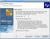À présent, nous allons nous attaquer au disque dur. Laissez l'option par défaut et cliquez sur Next. Nous allons dans un premier temps créer un disque dur virtuel, mais nous verrons par la suite que VMware Server permet d'utiliser un disque dur existant très facilement. Ici donc, choisissez l'option Create a new virtual disc. Choisissez IDE comme recommandé, puis attribuez une taille à votre disque dur, en fonction de vos besoins et du système d'exploitation qui sera installé. L'option Allocate all disk space now permet, comme pour VirtualBox, de choisir entre créer des images dynamiques ou à taille fixe. Cocher la case créera immédiatement sur votre disque dur un fichier de la taille spécifiée, la décocher créera un fichier dont la taille augmentera au fur et à mesure. Comme indiqué, allouer tout l'espace disque permet de gagner en performance. À vous de voir, comme d'habitude :p . L'option Split disk into 2GB files divisera l'image en plusieurs fichiers de 2 Go. L'option est là essentiellement pour des raisons de compatibilité, vous pouvez tout à fait la laisser activée. À l'étape suivante, vous pouvez changer le nom du disque ou le sauvegarder ailleurs, si vous le désirez. Quand tout est terminé, cliquez sur Finish. Hop, votre machine virtuelle est créée !
Avant de lancer la machine, il reste un peu de configuration à faire. Cliquez sur le bouton
. Dans la colonne de gauche, vous verrez les différents périphériques de la machine virtuelle. Dans la partie CD-Rom, vous pouvez choisir le lecteur qui sera utilisé. Si lors du démarrage, la machine virtuelle ne semble pas détecter le CD d'installation inséré, vous pouvez le changer ici. De plus, il arrive parfois que la souris ne soit pas détectée. Cliquez alors sur Mouse, puis sur Specify the host device, puis choisissez un des choix dans la liste, jusqu'à ce que ça fonctionne. 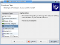Enfin, vous pouvez cliquer en bas sur Add pour ajouter quelques périphériques. Le plus important est la carte son, vous pouvez donc choisir Sound Adapter. Cliquez sur Next puis sur Finish, vous aurez ainsi du son dans votre machine virtuelle. Si le c?ur vous en dit, c'est également là que vous pourrez ajouter un autre lecteur CD-Rom, un nouveau disque dur, voire un port USB, utile si vous voulez que votre machine virtuelle puisse accéder par exemple à la clé USB branchée sur votre ordinateur. Quand tout est terminé, cliquez sur OK.
Installation de l'OS virtualisé
Installation de Windows
La procédure est la même que sur un vrai ordinateur, et nous l'avons de toute façon déjà vue dans la partie sur VirtualBox. Insérez le CD/DVD du système d'exploitation désiré, cliquez sur le bouton
, puis suivez les instructions. N'oubliez pas que vous devez cliquer dans la fenêtre de la machine virtuelle si vous désirez effectuer une action. Pour en sortir par la suite, la combinaison à effectuer est Ctrl + Alt.
Installation des VmTools
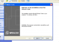Comme VirtualBox, VMware Server possède un logiciel qui s'installe sur le Windows virtualisé, afin de le faire fonctionner un peu mieux. Vous n'aurez pas droit à la virtualisation seamless, mais vous pourrez contrôler la machine sans cliquer dans la fenêtre, et avoir une meilleure résolution, c'est déjà ça ! Dans le menu de VMware Server, une fois votre machine lancée et Windows démarré, cliquez sur Vm puis sur Install VMware Tools. Vous aurez droit à un avertissement vous disant que le système doit être lancé pour pouvoir installer les VMware Tools (pour ceux au fond qui pensaient qu'on pouvait installer des logiciels alors que Windows est éteint ;) ), cliquez simplement sur Install. L'installation devrait se lancer, mais si ce n'est pas le cas, rendez-vous dans votre Poste de travail, puis double-cliquez sur le CD nommé VMware Tools. Suivez les instructions en cliquant simplement sur Next et Install. Une fois l'installation terminée, cliquez sur Finish, puis sur Yes pour redémarrer la machine virtuelle.
Une fois Windows redémarré, vous verrez dans le system tray l'îcone de VMware Tools. Voilà, vous pouvez maintenant profiter de manière optimale de votre Windows !
Les snapshots
VMware Server possède une fonction similaire aux instantanées de VirtualBox, appelés ici Snapshots. Ils vous permettent de prendre une "photo" de l'état du système pour y revenir à tout moment. Attention cependant, VMware Server ne vous permet de faire qu'un seul snapshot. Quand la machine est lancée, rendez-vous dans le menu VM, puis Snapshot, puis cliquez sur Take Snapshot. Pour revenir en arrière, il vous suffit de retourner dans ce menu et de choisir Revert to snapshot. Facile !
Utiliser un "vrai" Windows
Sur votre ordinateur, vous possédez peut-être un Windows déjà installé en compagnie de votre Linux. Et vous n'avez pas envie de vous refarcir une installation de Windows si vous pouvez utiliser celui déjà présent :p . C'est une bonne idée, car c'est un gain de temps et de place. Si l'opération est assez simple à accomplir avec VMware Server, cela nécessite tout de même de modifier quelque peu votre Windows.
Créer un profil matériel
Sur votre Windows, vous possédez déjà des pilotes et une configuration adaptée à votre ordinateur. Cependant, comme nous l'avons déjà vu, la configuration de la machine virtuelle est bien différente de celle de votre ordinateur. Vous ne pouvez donc pas utiliser les pilotes et la configuration déjà en place : cela risque de créer des incompatibilités et des conflits. Il existe heureusement une façon simple de résoudre ce problème : les profils matériels. Un pour votre configuration actuelle, un autre pour celle de la machine virtuelle. Ainsi, pas de problèmes ! 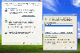Nous allons donc quitter Linux et retourner sous Windows. Je vais vous décrire ici quoi faire pour Windows XP, mais si vous en possédez un autre, la marche à suivre ne sera pas bien différente. Au pire, faites une recherche sur Google (avec pour mots clé votre version de Windows et les mots "profil matériel"), ça se trouve très facilement ! Une fois votre Windows lancé, allez dans le menu Démarrer, et faites un clic-droit sur Poste de travail puis choisissez Propriétés. Rendez vous dans l'onglet Matériel puis cliquez sur le bouton Profils matériels. Cliquez sur Copier, puis donnez un nom sympa à ce profil, comme VMware ou Machine Virtuelle. Enfin, cliquez sur le bouton Attendre que l'utilisateur sélectionne un profil matériel. Cliquez sur OK, et voilà, vous pouvez redémarrer sous Linux !
Créer la machine virtuelle
Il y a un petit changement, concernant la façon de démarrer VMware Server. En effet, si vous le démarrez normalement, vous obtiendrez une belle erreur quand vous tenterez d'utiliser votre disque dur dans la machine virtuelle. Pourquoi ? Parce que, par défaut, vous n'avez pas accès à l'intégralité du disque dur, pour éviter des problèmes (c'est d'ailleurs un des avantages de Linux). Pour pouvoir l'utiliser, nous allons donc démarrer VMware Server avec les droits de super-utilisateur. C'est tout simple, tapez ceci dans la console : Avec Ubuntu :
gksudo vmware
Avec Kubuntu :
kdesu vmware
Pour éviter de retaper ça à chaque fois, vous pouvez modifier le raccourci qui se trouve dans le menu des applications de votre gestionnaire de bureau.
Suivez ensuite les instructions habituelles pour créer la machine virtuelle, en n'oubliant pas de bien choisir Custom : choix du système d'exploitation, quantité de mémoire allouée... 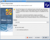Arrêtez-vous lorsque l'assistant vous demande quel type de disque utiliser. Là, choisissez Use physical hard drive et cliquez sur Next. Un avertissement s'affiche pour vous avertir que vous risquez des pertes de données si vous faites n'importe quoi, mais vous allez faire attention, hein :p ? Dans Device, choisissez le disque dur à utiliser. Le premier est en général le bon, mais si ce n'est pas le cas, vous le saurez rapidement : la machine virtuelle s'arrêtera bien vite. Laissez activée l'option Use entier disk. Cela permet une configuration plus simple, mais il faudra faire preuve de plus de prudence quand vous lancerez votre machine. Finissez la configuration en cliquant sur Next, puis Finish. Vous pouvez ensuite démarrer la machine virtuelle.
Démarrage de la machine
Si vous utilisez un dual-boot Windows/Linux, vous avez probablement GRUB d'installé. C'est donc lui qui s'affichera au lancement de votre machine. Choisissez-
Herm, je disais donc...Choisissez le système d'exploitation que vous voulez démarrer (Windows donc), et appuyez sur Entrée pour le lancer. Windows va ensuite vous demander de choisir un profil matériel. Sélectionnez-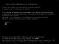
Ça commence à devenir lourd d'être toujours interrompu...Bref, sélectionnez le profil que vous venez de créer pour la machine virtuelle. Windows devrait ensuite démarrer. Vous pouvez alors, si vous le souhaitez, installer les VMware Tools, en suivant les mêmes instructions que tout à l'heure.
Résoudre les problèmes d'écran bleu
Vous avez bien suivi les instructions, mais Windows refuse de démarrer ? Si celui-ci donne l'impression de démarrer, puis affiche un écran bleu, et enfin fait redémarrer l'ordinateur, alors il est très probable que votre Windows soit installé sur un disque dur en SATA. C'est un problème commun, mais qui n'est pas forcément simple à résoudre. Ces étapes devraient normalement corriger le problème, mais souvenez-vous que rien n'est assuré... Tapez donc ceci dans la console pour ouvrir un éditeur de texte : Sous Ubuntu :
gksudo gedit
Sous Kubuntu :
kdesu kate
Rendez-vous ensuite avec l'éditeur de texte dans le dossier contenant vos machines virtuelles. Par défaut, il s'agit du dossier var/lib/VMware/Virtual Machine. Mais si vous avez suivi les instructions d'installation de ce tutoriel, vous les avez normalement mis dans le dossier VMware se trouvant dans votre dossier personnel (/home/votrenom/). Ouvrez le dossier contenant votre machine virtuelle (cela dépend du nom que vous lui avez donné), puis ouvrez le fichier .vmx qui se trouve dans ce dossier (il n'y en a qu'un seul, vous ne pouvez pas vous tromper :p ) Localisez la ligne suivante :
scsi0.present = "TRUE"
et remplacez-la par
scsi0.present = "FALSE"
Cherchez ensuite dans le fichier tous les occurrences de scsi0 et remplacez les par ide0 (vous pouvez utiliser la fonction Remplacer de votre éditeur de texte). Sauvegardez le fichier. Ensuite, ouvrez, dans le même répertoire, le fichier .vmdk. À l'intérieur, trouvez la ligne
ddb.adapterType = "buslogic"
puis remplacez la par
ddb.adapterType = "ide"
N'oubliez pas de sauvegarder le fichier.
Pfou, c'est terminé. Tentez de démarrer Windows, et si vous avez de la chance (et que vous avez bien suivi les instructions), celui-ci devrait se lancer sans aucun problème !
Mise à jour et désinstallation
Mise à jour
VMware Server est capable de détecter lorsqu'une mise à jour est disponible. Il vous suffit de cliquer sur le bouton de la fenêtre vous signalant qu'une nouvelle version est disponible pour vous rendre sur le site du logiciel. Il ne vous reste qu'à télécharger le fichier d'installation destiné à Linux, puis de suivre exactement les mêmes instructions que lors de l'installation.
Désinstallation
Pour désinstaller facilement VMware, il existe un script qui se chargera de retirer tout ce que le logiciel a mis sur votre système. Il vous suffit d'exécuter la commande suivante :
sudo /usr/bin/vmware-uninstall.pl
Ce script ne supprime cependant pas vos machines virtuelles. Si vous voulez vous en débarrasser, il suffit de supprimer le dossier où vous avez choisi de les mettre lors de l'installation.
Hé bien, je crois que nous avons fait le tour de VMware Server. Cependant, n'hésitez jamais à fouiller dans les options et à changer des choses, vous pourriez découvrir des fonctions intéressantes pour améliorer encore votre expérience de virtualisation !
Ainsi s'achève notre tour d'horizon des solutions de virtualisation sous Linux. Vous pouvez maintenant utiliser votre Windows presque comme si vous étiez en train de l'exécuter seul ! Amusez-vous bien avec votre nouveau système d'exploitation fraîchement virtualisé, et n'oubliez pas de dire à vos amis refractaires à Linux qu'ils pourront toujours exécuter leurs applications Windows importantes, même sans dual-boot :-° . Bonne virtualisation ;) !
{kind=link}
{kind=link}
{kind=link}
{kind=link}
{kind=link}
{kind=link}
{kind=link}
{kind=link}
{kind=link}
{kind=link}
{kind=link}
{kind=link}
{kind=link}
{kind=link}
{kind=link}
{kind=link}